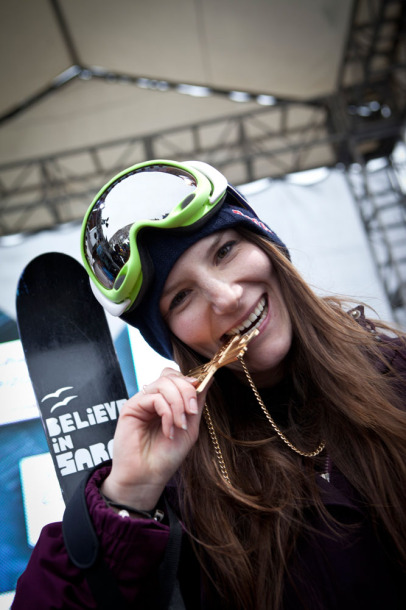
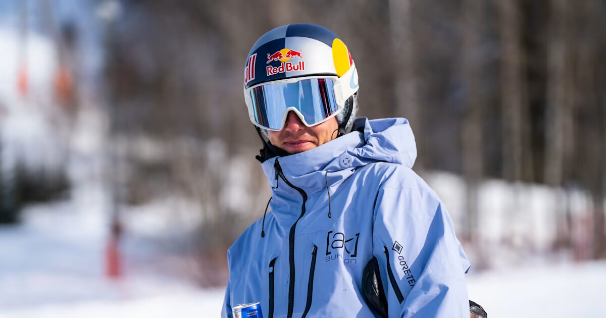
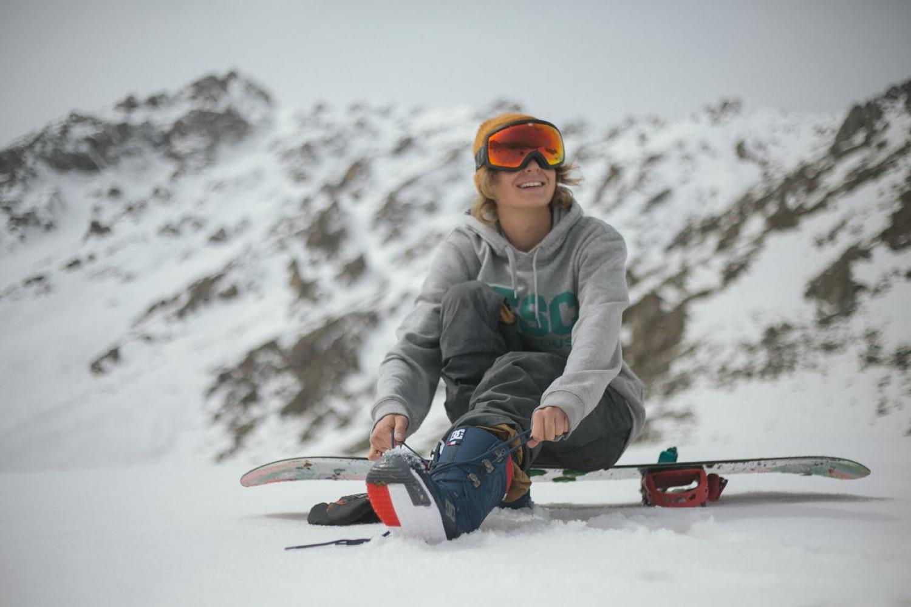
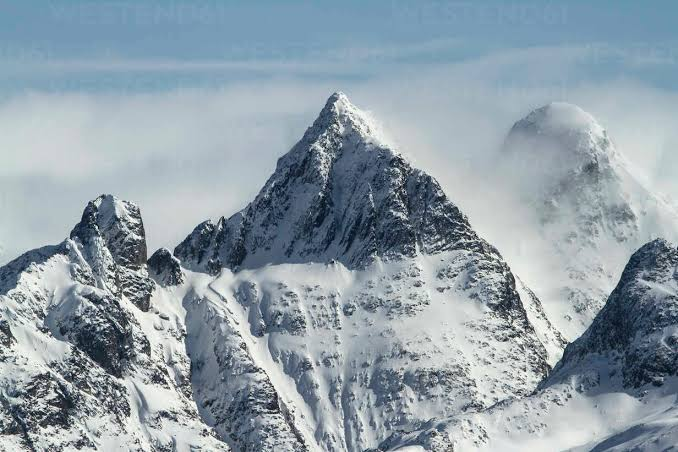
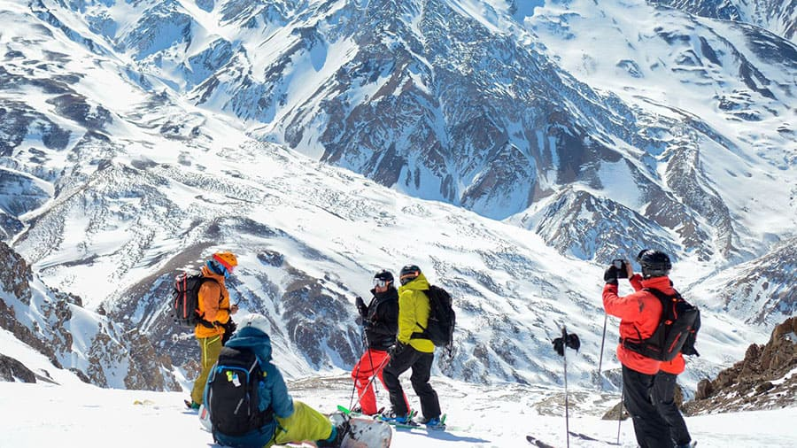
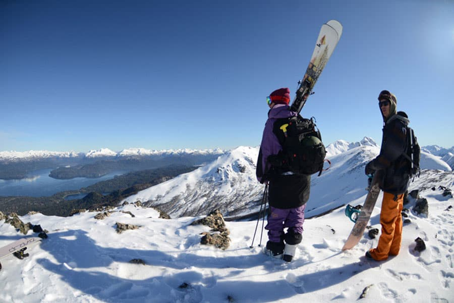
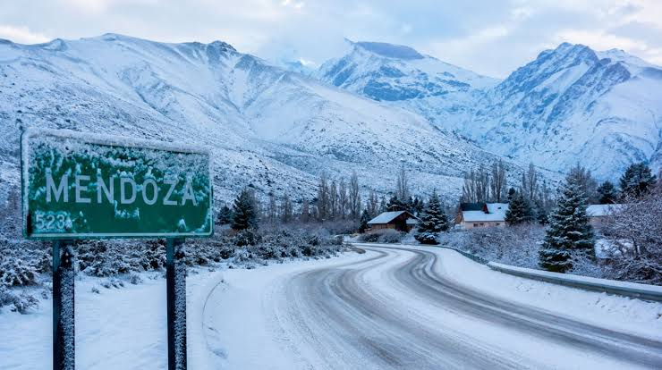
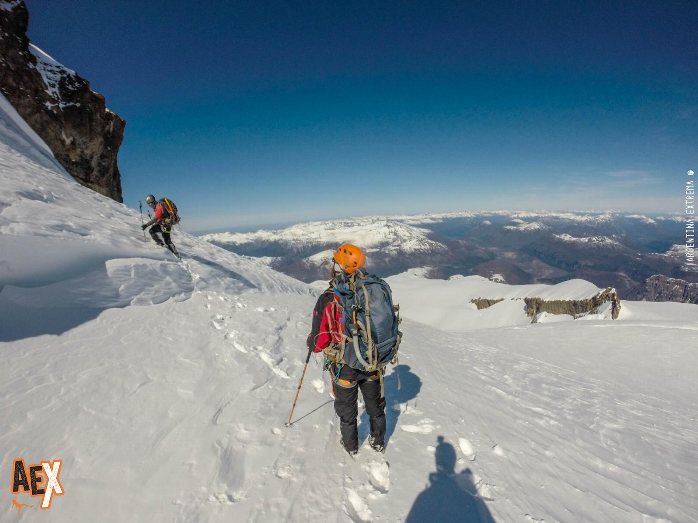

SANTIAGO LANGE
Instructor Técnico
ArgentinaACADEMIA DE MONTAÑA PATAGÓNICA
Elevamos tus límites. Formación técnica, táctica y mental diseñada exclusivamente para quienes ven la montaña como un destino final, no un paseo.
FILOSOFÍA DE COMPROMISO
Cúspides nació bajo una convicción simple: los desafíos extraordinarios exigen una gran preparación . No vendemos "experiencias superficiales", diseñamos montañistas.
Trabajamos la resistencia física, la lectura de terreno y, sobre todo, el control emocional necesario para cuando la montaña se pone difícil. Si buscás una postal fácil, no es acá. Si buscás transformarte, empezá hoy.
Leer nuestro métodoNuestro equipo
Instructores certificados con años de experiencia real en rescate, primeros auxilios y expediciones técnicas en los terrenos más hostiles.
Instructor Técnico
Argentina
Especialista en Hielo
Chile
Rescate Agreste
Argentina
Médica de Expedición
ChileExpediciones de Alta Exigencia
No son paquetes. Son expediciones técnicas con requisitos de formación y selección por aptitud.
Arista sur del Fitz Roy. Requiere dominio en escalada en roca, mixto y nieve compacta. La cumbre más técnica de la Patagonia.
Ver programa →Técnicas de piolet, crampones y progresión en cascadas heladas. Terreno glaciar en la Cordillera del Viento.
Ver programa →Autonomía total en vivac invernal. Navegación nocturna, raciones de emergencia y gestión del frío extremo en la Precordillera.
Ver programa →Certificación Wilderness First Responder. Primeros auxilios en campo sin acceso a servicios médicos. Requisito para todas las expediciones de Nivel IV+.
Ver programa →Protocolo Cúspides
La seguridad no es un ítem del folleto. Es la estructura completa detrás de cada decisión que tomamos antes, durante y después de cada expedición. Sin esto, no salimos.
Todos nuestros guías poseen la certificación de la Unión Internacional de Guías de Montaña. El único estándar que la Patagonia acepta.
Posición en tiempo real vía Garmin inReach durante toda la ruta. Sin zonas ciegas. Sin silencios tolerados.
El protocolo de regreso se define antes de partir, no en la cumbre. En la montaña no se negocia con el ego.
Cuerdas, arneses y hardware con certificación técnica vigente. Revisión completa antes de cada salida, sin excepción.
Cada expedición sale con al menos un guía certificado Wilderness First Responder. El plan de evacuación existe antes de la partida.
No cualquiera sube con nosotros. La selección es parte del protocolo. Los que aprueban, van listos. Los que no, se preparan primero.
La Inmensidad Real






Lo que dicen los que subieron
Cada reseña es de alguien que pasó por nuestra admisión, completó el programa y llegó donde quería llegar. Sin filtros.
★★★★★"Nunca pensé que iba a llegar tan preparado a la base del Fitz Roy. La admisión técnica me pareció una exigencia innecesaria, hasta que vi la montaña de frente."
★★★★★"El curso WFR me salvó la vida, literalmente. Tuve que aplicar lo aprendido en campo antes de bajar. No es un curso de fin de semana."
★★★★★"Vine de Santiago buscando algo serio. Encontré una academia que te trata como un alpinista adulto, no como un turista que paga por una foto."
★★★★★"La travesía invernal fue la experiencia más exigente y más honesta de mi vida. Salí con herramientas que no imaginaba que existían."
— PRÓXIMAMENTE
2027
El programa de formación profesional más exigente de la Patagonia. Para quienes ya llegaron a la cima y quieren llevar a otros. Veinte plazas por cohorte. No hay lista de espera — hay preparación.
Inscripciones abren enero 2027
Cupos agotados en ediciones anteriores. Dejá tu mail y te avisamos antes que nadie.
Sin spam. Solo una notificación cuando abran los cupos.